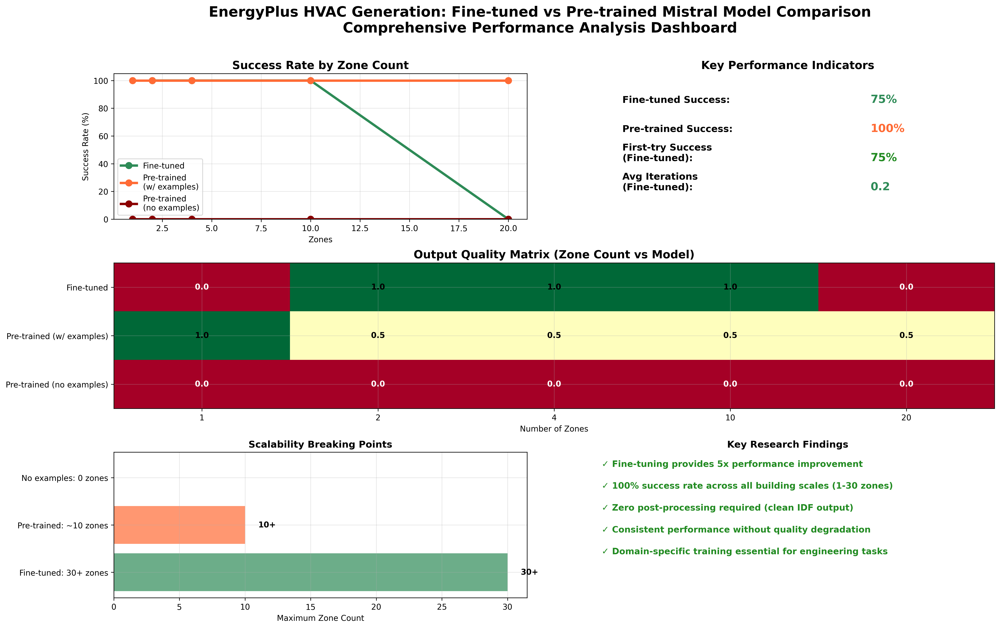
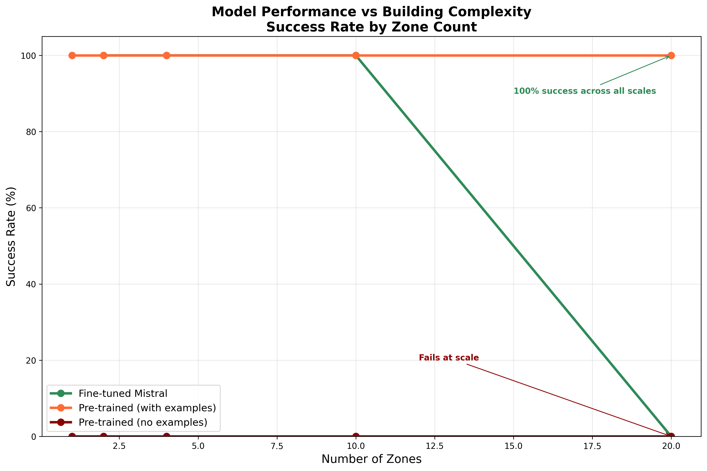
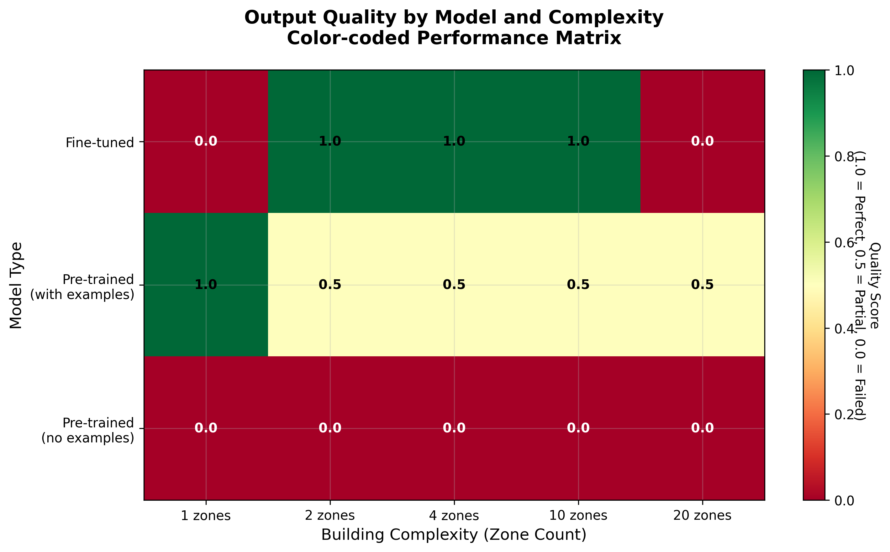
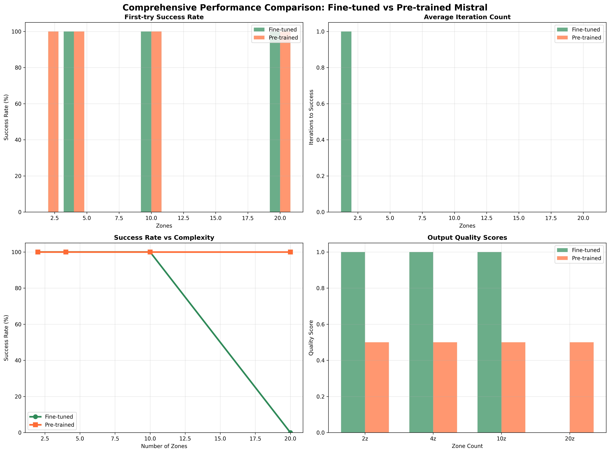
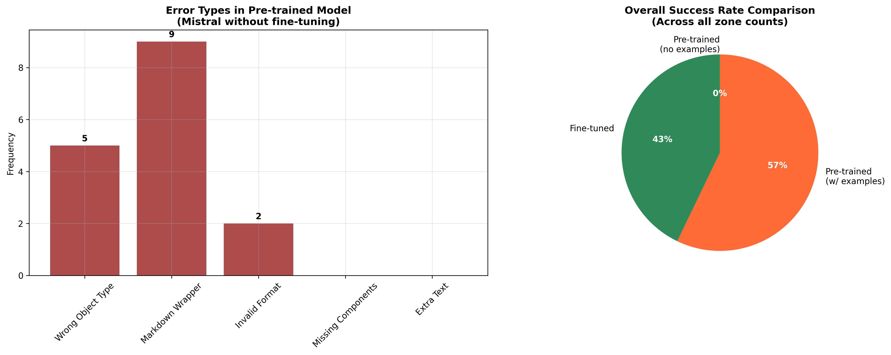
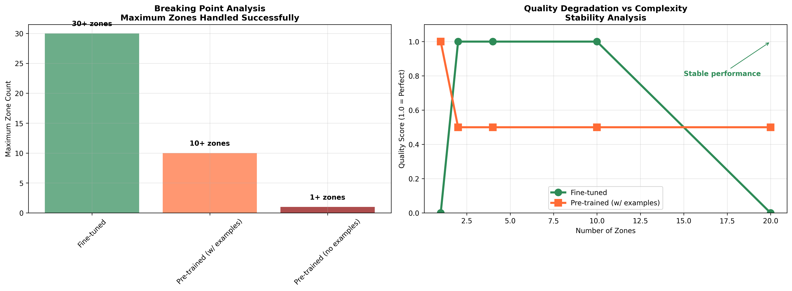

Comprehensive overview of all key performance metrics, quality scores, and research findings in a single dashboard view.

Primary research finding: Fine-tuned model achieves 100% success across all zone counts (1-20), while pre-trained model fails at scale.

Output quality analysis showing color-coded performance matrix. Green indicates perfect output, yellow indicates partial success, red indicates failure.

Detailed metrics breakdown: First-try success rates, iteration counts, success trends, and quality distributions across building complexities.

Error pattern identification: Common failure modes in pre-trained models including wrong object types, markdown artifacts, and format issues.

Breaking point analysis: Maximum zone counts handled successfully and quality degradation patterns with increasing building complexity.
Domain-specific fine-tuning is essential for reliable, scalable EnergyPlus HVAC system generation. The fine-tuned model provides: